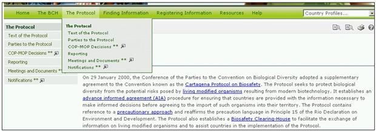
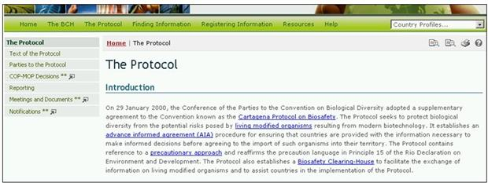

URL: http://bch.cbd.int/protocol/
El enlace El Protocolo en la barra de navegación, proporciona acceso a información sobre el Protocolo de Cartagena sobre Bioseguridad.

Figura 25

Figura 26
La página de El Protocolo está dividida en cuatro secciones las cuales proporcionan:
-
Una breve introducción al Protocolo;
-
Una reseña breve sobre el desarrollo del Protocolo;
-
Una explicación de los procesos del ICCP; y
-
Los Enlaces relacionados con las decisiones de la CP-RP reuniones del Grupo de Trabajo de Composición Abierta Ad Hoc en Bioseguridad y publicaciones relevantes.
El Menú que aparece al lado izquierdo en la página de El Protocolo proporciona información en seis áreas:
-
Texto del Protocolo;
-
Partes del Protocolo;
-
Decisiones de la CP-RP;
-
Presentación de Informes;
-
Reuniones y Documentos;
-
Notificaciones.